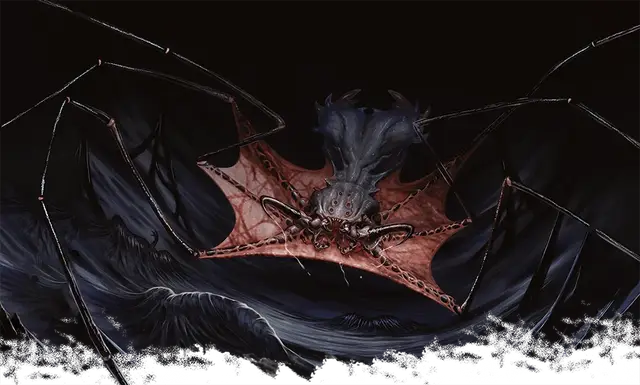

Ткач теней
Darkweaver
Средняя Аберрация, хаотично-злая

Класс Доспеха 16 (природный доспех)
Хиты 149 (23к8 + 46)
Скорость 50 футов, лазая 50 футов
| мод | спас | ||
|---|---|---|---|
| СИЛ | 10 | +0 | +0 |
| ЛОВ | 17 | +3 | +7 |
| ТЕЛ | 14 | +2 | +2 |
| мод | спас | ||
|---|---|---|---|
| ИНТ | 17 | +3 | +3 |
| МДР | 14 | +2 | +6 |
| ХАР | 15 | +2 | +2 |
Навыки Восприятие +6, Скрытность +7
Чувства тёмное зрение 120 футов, пассивное Восприятие 16
Языки Бездны, Глубинная речь, Телепатия 120 фт.
Опасность 10 (5900 опыта)
Бонус мастерства +4
Особенности
Теневая форма. Пока ткач находится в тусклом свете или темноте, броски атаки против него совершаются с помехой, если только ткач не недееспособен.
Паучье лазанье. Ткач может лазать по сложным поверхностям, включая потолки, без совершения проверок характеристик.
Гиперчувствительность к солнечному свету. Ткач получает 10 урона излучением, когда он начинает свой ход, находясь на солнечном свету. Будучи на солнечном свету, ткач совершает с помехой броски атаки и проверки характеристик.
Действия
Мультиатака. Ткач совершает две атаки Теневой паутиной и одну атаку Укусом. Он может использовать Притягивание после любой из этих атак
Укус. . Рукопашная атака оружием: +7 к попаданию, досягаемость 10 футов, одно существо. Попадание: 13 (3к6 + 3) колющего урона плюс 17 (5к6) урона некротической энергией, если цель существо, её максимум хитов уменьшается на количество, равное полученному урону некротической энергией. Уменьшение хитов длится до тех пор, пока цель не окончит продолжительный отдых. Цель умирает, если этот эффект уменьшает максимум её хитов до 0.
Теневая паутина. . Дальнобойная атака оружием: +7 к попаданию, дистанция 120 футов, одно существо. Попадание: 16 (3к10) урона некротической энергией и цель становится схваченной паутиной (Сл высвобождения 15). Теневую паутину можно атаковать и уничтожить (КД 16; хиты 20; уязвимость к урону излучением; иммунитет к дробящему урону, урону ядом и урону психической энергией). Ткач может единовременно держать в захвате до шести существ, используя свою теневую паутину.
Притягивание. Ткач подтягивает каждое схваченное им существо на расстояние до 60 фт. по прямой к себе.
Логово
Ткачи теней обитают в неосвещенных пещерах, предпочитая места, где царит кромешная тьма, такие как Пандемониум или Царство Теней. Ткачи теней, как правило, обитают в изолированных местах, где они могут спокойно ткать теневую паутину.
Ткач теней, встреченный в своём логове, имеет показатель опасности 11 (7200 опыта).
Действия логова
По очереди инициативы "20" (при равной инициативе персонаж совершает действие прежде действия логова), ткач может совершить действие в логове, чтобы создать один из следующих эффектов; он не может использовать один и тот же эффект два раунда подряд:
• Гашение. Все немагические источники пламени в пределах 30 футов от ткача гаснут. Кроме того, если эта область перекрывает часть зоны света, созданного заклинанием с уровнем не выше 2-го, заклинание, создавшее свет, рассеивается.
• Страх теней. Ткач теней вплетает ужасающую магию в свои сети. Каждое существо, попавшее в Теневую паутину ткача, должно совершить спасбросок Мудрости Сл 15. При провале существо становится испуганным до конца своего следующего хода.
• Теневой шаг. Если ткач теней находится в тусклом свете или темноте, он телепортируется вместе с любым снаряжение, которое на нем надето, в незанятое пространство, которое он может видеть в пределах 60 футов, находящееся в тусклом освещении или темноте.
Паутина ткача теней. Вероятность того, что в паутине ткача теней будет 1к6 коконов, составляет 50 процентов. Воспользуйтесь таблицей Содержимого коконов ткача теней, чтобы определить, что может находиться внутри каждой из этих скоплений теней.
Содержимое коконов ткача теней.
| к6 | Содержимое |
| 1 | Бросьте кость. Если вы выбрасываете четное значение, то кокон содержит кости гуманоида. Если вы выбрасываете нечетное значение, то в коконе будут кости негуманоидного существа, такого как фламф [flumph] или мул [mule]. |
| 2 | Рой насекомых [swarm of insects], которые могли бы быть детенышами ткача тьмы. |
| 3 | Труп, держащий банку с универсальным растворителем [universal solvent] с немного прилипшей крышкой. |
| 4 | Коллекция меню из ресторанов Сигила |
| 5 | 4к12 золотых монет среди переваренной жижи |
| 6 | Полурослик обыватель [commoner] или гардинал мюстеваль [musteval Guardinal], о котором забыл ткач теней |
Описание
“Самое худшее в ткачах теней не то, что они хотят тебя съесть, а то, что они хотят разговаривать с тобой, пока едят тебя”.
- Морте
Паукообразные хищники Царства Теней, ткачи теней обитают в пещерах, подземельях и других темных местах по всей мультивселенной, включая Подсигил и продуваемую всеми ветрами тьму Пандемониума. Ткач теней прячется в тенях своего логова, ожидая, когда незадачливая добыча пройдет мимо. Когда цель приближается, ткач теней выстреливает в свою добычу паутиной из чистой тени, а затем утаскивает жертву в темноту.
Ткачи теней очарованы ощущениями — особенно вкусом — и тем, как существа из разных миров воспринимают реальность. Для них процесс принятия пищи - это переживание, которое необходимо растягивать и смаковать, рассматривая каждое блюдо во всех его аспектах. Будь то демон, архонт, брыкающийся полурослик или впавший в кататонию мул, все подобные блюда - кулинарные изыски для ткача теней, приготовленные на космической кухне, которой является мультивселенная. Эти паукообразные кошмары ценят описания ощущений из вторых рук, особенно тех, которые они вряд ли испытают в своей домашней обстановке. Пленник ткача теней может отсрочить свое поглощение, поделившись с монстром рассказами о своем опыте, особенно о вкусных блюдах. Некоторые могут даже убедить ткача теней отпустить их, если они пообещают вернуться с редкими специями или единственными в своем роде блюдами. Однако тем, кому удается сбежать от ткача теней, следует дважды подумать, прежде чем вернуться в его логово, поскольку ткачи ставят свои аппетиты превыше выгодных сделок.